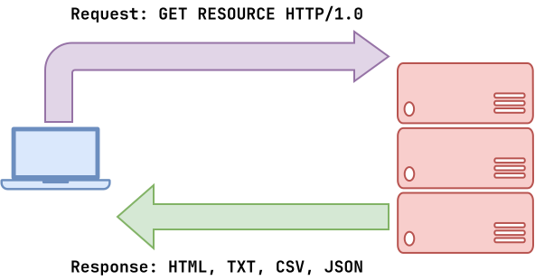

Logistics¶
- Interview 01: Sign up (double check times and locations),
practice01.py. - Checklist 01: Test will not cover requests, csv, json.
- Homework 03: Extension to Monday, September 14.
Requests: HTTP¶

Requests: Web Scraping¶
Write Python code that does the following:
# Constants
URL = 'https://pnutz.h4x0r.space/courses/cse.20589.fa26'
# 0. Fetch data using curl
import os
with os.popen(f'curl -sL {URL}') as stream:
text = stream.read()
# 1. Fetch data using requests
import requests
response = requests.get(URL)
text = response.text
# 2. Extract title using regex (REVIEW)
import re
if matched := re.search(r'<title>([^<]+)</title>', text):
print(f'Title is: {matched[1]}')
# 3. Extract images using regex (RESUME)
for img_source in re.findall(r'<img src="([^"]+)"[^>]*>', text):
print(img_source)
CSV: Wikipedia¶
Write a script that parses the CSV data at https://yld.me/raw/bA7.csv and then lists the professors' netid and phone numbers.
$ ./professors.py
jbb 574-631-8810
skumar5 574-631-7381
pbui 574-631-1467
...
adingler 574-631-8752
tjung 574-631-8322
wtheisen 419-905-6474
import csv
import requests
URL = 'https://yld.me/raw/bA7.csv'
# 0. Download data
response = requests.get(URL) # Review: Requests
lines = response.text.splitlines() # Review: splitlines
# 1. With split
for index, line in enumerate(lines): # Review: enumerate
if index == 0:
continue
# Discuss: destructuring assignment
netid, last, first, phone = line.split(',')
print(f'{netid:>8} {phone}')
print()
# 2. With csv.reader
for professor in csv.reader(lines[1:]): # Discuss: csv.reader
netid, last, first, phone = professor
print(f'{netid:>8} {phone}')
print()
# 2. With csv.DictReader
for professor in csv.DictReader(lines): # Discuss: csv.DictReader
print(f'{professor["netid"]:>8} {professor["phone"]}')
JSON: Wikipedia¶
Write a script that lists all the Wikipedia entries for a particular search term:
$ ./wikipedia.py python
1. Python
Look up Python or python in Wiktionary, the free dictionary. Python may
refer to: Pythonidae, a family of nonvenomous snakes found in Africa,
Asia, and
2. Python (codename)
Python was a Cold War contingency plan of the British Government for
the continuity of government in the event of nuclear war. Following the
report of
...
import pprint
import re
import sys
import requests
# Constants
HEADERS = {'User-Agent': __name__}
URL = 'https://en.wikipedia.org/w/api.php' # Discuss: APIs
PARAMS = {
'action' : 'query',
'list' : 'search',
'format' : 'json',
'srsearch': sys.argv[1]
}
# Main Execution
def main():
# Review: keyword arguments
result = requests.get(URL, params=PARAMS, headers=HEADERS)
# Discuss: json
data = result.json()
# Discuss: pretty printing
#pprint.pprint(data)
# Discuss: chaining operators
articles = data['query']['search']
# Discuss: sorting by key, lambda
articles = sorted(data['query']['search'], key=lambda o: o['wordcount'])
# Review: slicing, enumerate
for index, entry in enumerate(articles[:5], 1):
# Discuss: fence pattern
if index > 1:
print()
title = entry['title']
# Discuss: re.sub
snippet = re.sub(r'<[^>]+>', '', entry['snippet'])
# Discuss: formatting
print(f'{index:4}.\t{title}\n\t{snippet}')
if __name__ == '__main__':
main()